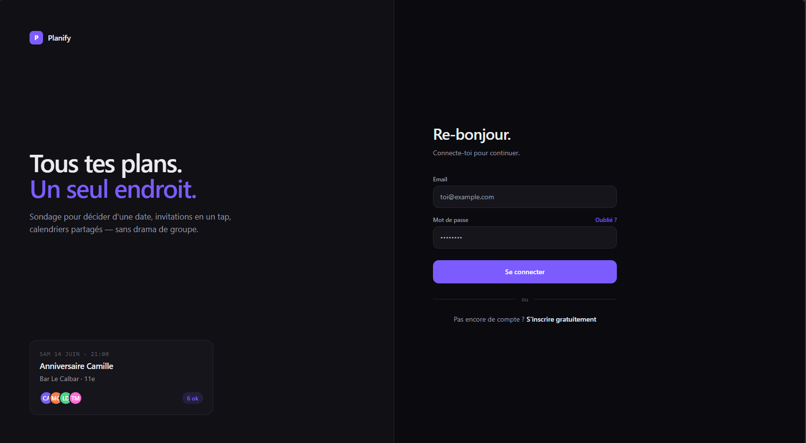
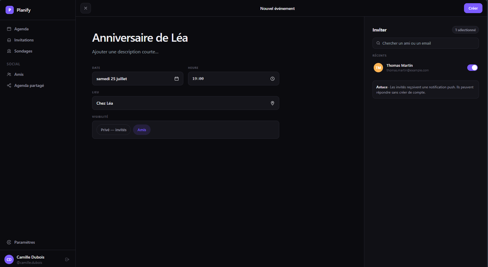
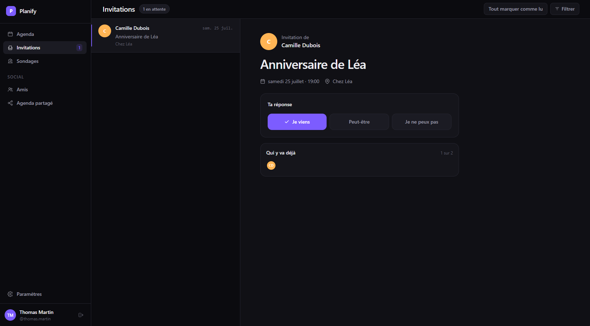
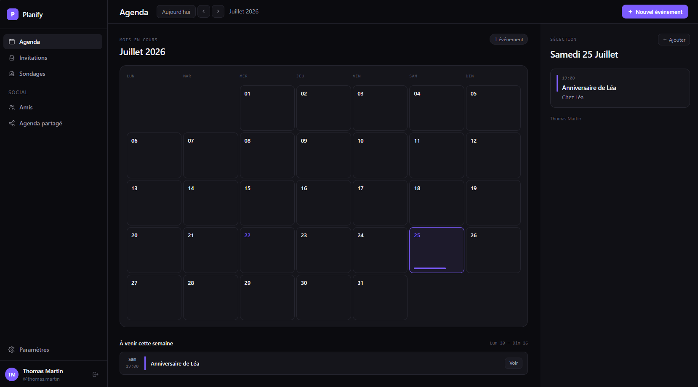
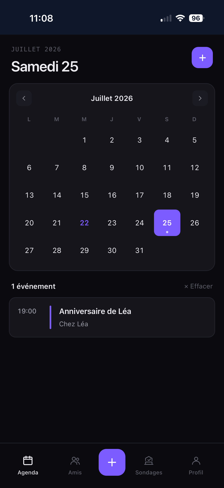

Planify est une application web progressive de planification d’événements reposant sur un calendrier partagé entre amis. Le projet est né d’un constat personnel : organiser une soirée, un week-end ou un anniversaire oblige aujourd’hui à jongler entre une messagerie pour discuter, un outil de sondage pour choisir une date et un agenda pour ne pas oublier. Aucun de ces outils ne réunit au même endroit la création de l’événement, l’invitation des proches, la décision collective et les rappels.
Je suis à la fois le commanditaire et le concepteur du produit : j’ai défini le besoin, rédigé les user stories, puis assuré seul la conception, le développement, les tests et le déploiement. Cette position explique certains arbitrages assumés dans ce dossier, notamment la priorité donnée au cœur métier plutôt qu’à l’exhaustivité fonctionnelle.
Les besoins prioritaires ont été formalisés sous forme de user stories, qui servent de fil conducteur au prototype (chapitre 2) et au cahier de recettes (chapitre 9).
| Réf. | User story | Critère d’acceptation principal |
|---|---|---|
| US-01 | En tant qu’utilisateur, je veux créer un compte et m’authentifier. | Mot de passe haché, session protégée. |
| US-02 | Je veux créer un événement (titre, date, lieu, type, visibilité). | Événement persisté et visible dans mon agenda. |
| US-03 | Je veux inviter mes amis à un événement et qu’ils en soient avertis. | Invitation créée, notification push émise. |
| US-04 | En tant qu’invité, je veux accepter ou refuser une invitation. | Statut mis à jour ; l’événement accepté rejoint mon agenda. |
| US-05 | Je veux gérer ma liste d’amis (demande, acceptation). | Relation d’amitié gérée de bout en bout. |
| US-06 | Je veux créer un sondage pour décider collectivement. | Un seul vote par utilisateur et par sondage. |
| US-07 | Je veux personnaliser l’interface (thème clair ou sombre, couleur). | Préférence enregistrée et appliquée. |
| US-08 | Je veux installer l’application sur mon téléphone. | Application installable, notifications push opérationnelles. |
Relevés du 22/07/2026 sur le dépôt (comptage de fichiers et git rev-list --count HEAD).
Ce document couvre le BLOC 2. Chaque chapitre est rattaché à une compétence de la grille, signalée par un repère C2.x.x. La rédaction s’appuie sur une revue systématique du code : les extraits présentés sont recopiés des fichiers sources, et les affirmations techniques ont été confrontées au dépôt. Lorsqu’un élément attendu n’a pas pu être démontré, il est signalé comme tel plutôt que contourné ; l’annexe C en donne la liste complète.
L’architecture poursuit trois objectifs : la maintenabilité par une séparation claire des responsabilités, la sécurité par une validation systématique côté serveur, et l’évolutivité pour ajouter des fonctionnalités sans refonte.
Versions relevées dans node_modules le 22/07/2026.
| Domaine | Technologie | Justification |
|---|---|---|
| Framework full-stack | Next.js 16.2.11 (App Router) | Routage par fichiers, composants serveur et routes API dans un même socle : pertinent pour un développeur unique. |
| Langage | TypeScript 5.9.3 | Typage statique : erreurs détectées à la compilation, refactoring plus sûr. |
| Bibliothèque d’interface | React 19.2.0 | Paradigme composant, rendu déclaratif, écosystème mature. |
| Accès aux données | Prisma 6.19.3 + MongoDB | Schéma typé et client généré ; MongoDB adapté à des entités souples (événements, sondages). |
| Authentification | NextAuth 4.24.15 | Sessions JWT éprouvées, fournisseur « Credentials » associé à un hachage bcrypt. |
| Styles | Tailwind CSS 3.4.18 | Cohérence visuelle, thèmes clair et sombre simples à piloter. |
| PWA et notifications | web-push 3.6.7, Service Worker dédié | Installation sur mobile et notifications push natives via VAPID, sans dépendance de génération tierce. |
| Tests | Vitest 4.1.10, Testing Library | Exécution rapide, API proche de Jest, rendu de composants et mocks. |
| Qualité | ESLint 9.39.1, typescript-eslint 8, Prettier 3.6.2 | Analyse statique et formatage homogène. |
| Exécution | Node.js 22.20.0, PM2, Nginx | Gestionnaire de processus derrière un proxy inverse assurant TLS et fichiers statiques. |
L’application est organisée en couches : le navigateur n’accède jamais directement à la base. Toute opération passe par une route API qui authentifie la requête, valide les données, applique les règles métier, puis délègue à la couche d’accès aux données.
Cette organisation se lit directement dans l’arborescence du projet.
planify/ ├── app/ # présentation et API (App Router) │ ├── (pages)/ # events, polls, friends, settings, auth… (16 pages) │ ├── components/ # composants liés au gabarit (navigation…) │ └── api/ # 28 routes REST (route.ts) ├── components/ # composants d'interface réutilisables ├── lib/ # services transverses (auth, prisma, push, hooks) ├── prisma/schema.prisma # modèle de données typé ├── tests/ # mocks et utilitaires de test └── .github/workflows/ # pipeline CI/CD
Next.js autorise plusieurs stratégies de rendu. Le build de production indique celle qui s’applique à
chaque route : sur les 45 entrées produites, 14 pages sont prérendues statiquement à la compilation
(connexion, inscription, agenda, invitations, sondages, paramètres…) et 31 routes sont
rendues dynamiquement à la demande — les 28 routes API ainsi que les trois pages paramétrées
/events/[id], /events/[id]/edit et /polls/[id]. Les données
utilisateur sont donc chargées côté client ou par appel aux routes API, et non par un rendu serveur
systématique de chaque page.
Le modèle est déclaré dans prisma/schema.prisma et compte dix entités. Prisma sert ici à
décrire un schéma typé, à générer le client d’accès (prisma generate) et à synchroniser le
modèle avec la base (prisma db push). MongoDB ne fonctionnant pas avec des migrations
versionnées comme une base relationnelle, cette synchronisation remplace le mécanisme de migration.
Les relations sont volontairement exprimées par référence d’identifiant plutôt que par des relations Prisma complètes, afin d’éviter les transactions multi-documents coûteuses sous MongoDB. L’intégrité métier est garantie par des contraintes d’unicité : un seul vote par sondage et par utilisateur, une seule participation par couple (événement, utilisateur).
Notification et PushSubscription.Extrait du schéma : l’entité Event et la contrainte d’unicité des participations.
model Event { id String @id @default(auto()) @map("_id") @db.ObjectId title String date DateTime visibility String @default("friends") // public | friends | private createdById String @db.ObjectId eventType EventType? @relation("EventToEventType", ...) } model EventParticipant { eventId String @db.ObjectId userId String @db.ObjectId status String @default("pending") // pending | accepted | declined @@unique([eventId, userId]) // une seule invitation par couple }
EventCard, PollCard, DateTimePicker, ConfirmModal…),
ce qui permet la réutilisation et des tests unitaires ciblés.lib/,
distincte de la présentation et des routes API./api/events, /api/polls,
verbes HTTP et codes de statut normalisés (200, 201, 400, 401, 403, 404, 500).useFriendRequests, useEventInvitations, usePushNotifications).Concrètement, ajouter une fonctionnalité revient à créer une route API, un composant et éventuellement un hook, sans toucher au cœur existant. Le typage statique sécurise ces évolutions : lors de l’audit décrit au chapitre 10, la vérification de types a permis de détecter dix-huit anomalies qui n’étaient pas visibles à l’exécution.
Le prototype retenu pour la démonstration couvre la création d’un événement et l’invitation d’amis, jusqu’à la réponse de l’invité et la mise à jour de son agenda.
Ce parcours a été choisi parce qu’il constitue le cœur métier du produit et qu’il mobilise, en une seule chaîne, l’ensemble des couches de l’application : l’interface (formulaire, sélection d’invités), l’authentification, un contrôle d’autorisation (seul le créateur peut inviter), la persistance avec contrainte d’unicité, l’envoi d’une notification push et une règle métier de consolidation de l’agenda. Il répond directement aux user stories US-02, US-03 et US-04, et il est utilisable aussi bien sur ordinateur que sur mobile.
| Composant ou page | Rôle | Éléments d’interface |
|---|---|---|
app/events/new | Création d’un événement | Champs texte, sélecteur de date et d’heure, choix du type et de la visibilité, bouton de validation. |
DateTimePicker | Saisie de la date et de l’heure | Calendrier interactif et sélection horaire. |
| Panneau « Inviter » | Sélection des invités | Recherche, liste d’amis, interrupteurs de sélection. |
app/events/invitations | Réponse aux invitations reçues | Cartes d’invitation et actions de réponse. |
ConfirmModal | Confirmation d’action sensible | Fenêtre modale, boutons Confirmer et Annuler. |
MobileBottomNav, DesktopNav | Navigation adaptative | Barre basse sur mobile, navigation latérale sur ordinateur. |
L’ajout de participants est protégé : seule la personne ayant créé l’événement peut inviter, les
doublons sont neutralisés par la contrainte d’unicité et chaque invité reçoit une notification. Extrait
de app/api/events/[id]/participants/route.ts :
// Contrôle d'autorisation : l'appelant doit être le créateur de l'événement if (event.createdById !== user.id) { return NextResponse.json( { error: 'Seul le créateur peut ajouter des participants' }, { status: 403 }); } // upsert : la contrainte @@unique(eventId, userId) neutralise les doublons await prisma.eventParticipant.upsert({ where: { eventId_userId: { eventId, userId } }, create: { eventId, userId, status: 'pending' }, update: {} }); // Notification push envoyée à chaque invité await sendPushNotification(userId, { title: 'Nouvelle invitation', body: `${creatorName} vous a invité à "${eventTitle}"` });
Les captures d’écran du prototype en fonctionnement figurent en annexe A. L’application est également
accessible sur https://planify.johanpoyet.fr/ pour une démonstration en direct.
Ce chapitre décrit l’outillage de développement, les critères de qualité et de performance retenus, puis le protocole de déploiement qui porte chaque modification jusqu’au serveur de production.
| Composant | Outil retenu | Rôle |
|---|---|---|
| Éditeur de code | Visual Studio Code | Développement, extensions ESLint, Prettier et Prisma, intégration Git. |
| Compilateur | TypeScript 5.9.3 (tsc) et Turbopack | Vérification de types ; Turbopack assure la compilation du bundle Next.js. |
| Gestionnaire de paquets | npm 10.9.3 | Dépendances verrouillées par package-lock.json, scripts de build et de test. |
| Gestion des sources | Git et GitHub | Versionnage, branches de fonctionnalité, déclenchement du pipeline. |
| Qualité du code | ESLint 9.39.1, typescript-eslint 8, Prettier 3.6.2 | Analyse statique et formatage homogène. |
| Environnement de test | Vitest 4.1.10, jsdom, Testing Library | Exécution des tests unitaires et de composants, mesure de couverture. |
| Serveur d’application | Next.js (next start), Node.js 22.20.0 | Sert l’application compilée sur le port 3000. |
| Gestionnaire de processus | PM2 | Maintient le service actif, redémarrage automatique, plafond mémoire configuré à 400 Mo. |
| Proxy inverse | Nginx | Terminaison TLS, service des fichiers statiques, relais vers Next.js. |
| Base de données | MongoDB | Stockage des données applicatives. |
| Production | VPS Ubuntu 24.04 (4 vCPU, 8 Go) | Hébergement de l’application sur https://planify.johanpoyet.fr, derrière Nginx et TLS Let’s Encrypt. |
Les critères ci-dessous sont ceux que le projet sait mesurer aujourd’hui. Chaque ligne indique la commande utilisée et la valeur relevée le 22/07/2026. Les six premières portent sur la chaîne de développement (Windows 11, Node.js 22.20.0) ; les deux dernières ont été relevées sur l’environnement de production, l’application étant en service. Les mesures qui n’ont pas pu être réalisées sont écartées de ce tableau et listées en annexe C plutôt que remplacées par une estimation.
| Critère | Commande | Objectif | Valeur relevée | État |
|---|---|---|---|---|
| Absence d’erreur de types | npm run typecheck | 0 erreur | 0 erreur (sortie 0) | Atteint |
| Absence d’erreur de lint | npm run lint | 0 erreur | 0 erreur, 443 avertissements | Atteint |
| Build de production | npx next build | Build réussi | Sortie 0 en 20 s (compilation 6,3 s) | Atteint |
| Couverture de tests | npx vitest run --coverage | > 70 % des lignes | 76,6 % des lignes | Atteint |
| Tests au vert | npx vitest run | Suite complète | 316 / 316 | Atteint |
| Dépendances sans vulnérabilité critique | npm audit --omit=dev | 0 critique | 0 critique, 4 au total | Atteint |
| Temps de réponse en production | curl -w %{time_total} sur la page de connexion (5 relevés) | < 1 s | 0,081 s à 0,106 s | Atteint |
| Empreinte mémoire en production | pm2 jlist | < 400 Mo | 69 Mo | Atteint |
Les huit critères sont atteints. Les deux dernières lignes ont été relevées sur l’environnement de production le 22/07/2026, l’application étant en service : la consommation constatée (69 Mo) reste très en deçà du plafond de 400 Mo configuré dans PM2.
Le déploiement est déclenché automatiquement lorsqu’une modification est intégrée sur la branche
main, et uniquement si les contrôles de qualité ont réussi (chapitre 4). GitHub Actions se
connecte alors en SSH au VPS et exécute le script de déploiement.
Séquence exécutée sur le serveur par deploy.sh :
#!/bin/bash cd ~/apps/planify git pull origin main # récupère la version validée npm ci # installation reproductible (lockfile) npx prisma generate # régénère le client Prisma npm run build # build de production pm2 reload ecosystem.config.js # rechargement sans coupure de service
Ce script réside sur le serveur et n’est pas versionné dans le dépôt : c’est une limite identifiée en annexe C. Les secrets de connexion (hôte, utilisateur, clé SSH) sont stockés dans les secrets GitHub et n’apparaissent jamais dans le dépôt.
L’intégration continue vérifie automatiquement chaque modification — analyse statique, types, tests, build — avant toute mise en production, afin de réduire le risque de régression.
Le pipeline est décrit dans .github/workflows/ci-cd.yml. Il comporte deux tâches :
push, sur toutes les branches, ainsi qu’à chaque
pull request. Elle installe les dépendances de façon reproductible, génère le client Prisma, puis
enchaîne lint, vérification de types, tests avec couverture et build de production.main, lors d’un push,
et subordonnée à la réussite de quality par la directive needs.Cette dépendance est le point central du dispositif : si le lint, la vérification de types, un test ou le build échoue, la tâche deploy n’est pas exécutée et la version fautive n’atteint pas le serveur. Les étapes s’enchaînent également en séquence à l’intérieur de quality : la première qui échoue interrompt la tâche.
name: CI/CD on: push: pull_request: jobs: quality: runs-on: ubuntu-latest steps: - uses: actions/checkout@v4 - uses: actions/setup-node@v4 with: { node-version: '22', cache: 'npm' } - run: npm ci - run: npx prisma generate - run: npm run lint # analyse statique - run: npm run typecheck # tsc --noEmit - run: npx vitest run --coverage - uses: actions/upload-artifact@v4 # rapport de couverture archivé if: always() with: { name: coverage-report, path: coverage/ } - run: npx next build deploy: runs-on: ubuntu-latest needs: quality # subordination explicite if: github.ref == 'refs/heads/main' && github.event_name == 'push' steps: - uses: actions/checkout@v4 - uses: appleboy/ssh-action@v1.1.0 with: host: ${{ secrets.SSH_HOST }} key: ${{ secrets.SSH_PRIVATE_KEY }} script: bash ~/apps/planify/deploy.sh
Le développement s’effectue sur des branches de fonctionnalité (par exemple
feat/design-redesign), fusionnées ensuite dans main. Comme la tâche
quality s’exécute aussi sur les pull requests, l’état des contrôles est connu avant la fusion.
En cas d’échec, la procédure est la suivante : identifier l’étape fautive dans le journal GitHub Actions, reproduire l’erreur localement avec la même commande, corriger sur la branche concernée, puis pousser à nouveau — ce qui relance le pipeline. Le rapport de couverture est archivé comme artefact à chaque exécution, y compris en cas d’échec, ce qui permet de comparer deux exécutions.
main (commit 4103963, 22/07/2026). Les deux tâches ont réussi :
Qualité en 48 s (analyse statique 0 erreur, types 0 erreur, 316 tests conformes, rapport de
couverture publié comme artefact, build de production) puis Déploiement en 56 s, soit
1 min 53 s du commit à la mise en ligne. La barrière de qualité a par ailleurs joué son rôle
pendant la préparation de ce dossier : elle a mis en évidence 27 tests en échec issus de la refonte
d’interface, tous corrigés depuis (chapitre 10).
La protection de la branche main par règle de dépôt (blocage de la fusion
tant que les contrôles échouent) n’est pas activée à ce jour : la subordination du déploiement est
assurée au niveau du workflow. Ce point figure en annexe C.
Le harnais de tests couvre les routes API, les services et les composants d’interface. Il compte 44 fichiers de tests et 307 cas exécutés.
| Outil | Rôle |
|---|---|
| Vitest 4.1.10 | Lanceur de tests, environnement jsdom, API proche de Jest. |
| Testing Library (React) | Rendu des composants et interactions du point de vue de l’utilisateur. |
Mocks dédiés (tests/mocks/) | Simulation de Prisma, NextAuth, web-push et de la navigation Next.js. |
| @vitest/coverage-v8 4.1.10 | Mesure de couverture sur lib/, app/api/ et les composants. |
// vitest.config.ts — périmètre de couverture et génération du rapport test: { globals: true, environment: 'jsdom', setupFiles: ['./tests/setup.ts'], include: ['**/__tests__/**/*.test.{ts,tsx}'], coverage: { provider: 'v8', reportOnFailure: true, // rapport produit même si des tests échouent reporter: ['text', 'text-summary', 'json-summary', 'html'], include: ['lib/**', 'app/api/**', 'components/**', 'app/components/**'], exclude: ['**/__tests__/**', '**/*.d.ts', 'node_modules/**', '.next/**'] } }
Mesure réalisée le 22/07/2026 avec npx vitest run --coverage (fournisseur v8). Le périmètre
analysé est celui déclaré ci-dessus : code applicatif uniquement, à l’exclusion des fichiers de tests, des
déclarations de types et des dossiers node_modules et .next. Aucun seuil
bloquant n’est configuré à ce jour.
| Indicateur | Couvert / total | Taux |
|---|---|---|
| Instructions (statements) | 1 268 / 1 657 | 76,52 % |
| Branches | 705 / 949 | 74,28 % |
| Fonctions | 235 / 327 | 71,86 % |
| Lignes | 1 161 / 1 515 | 76,63 % |
La couverture atteint donc plus de 76 % des lignes du code applicatif : la majorité du code développé est exercée par les tests. Le détail par domaine montre où porte l’effort et où subsistent des manques.
| Domaine | Fichiers | Instructions | Branches | Fonctions | Lignes |
|---|---|---|---|---|---|
app/api/ (routes) | 28 | 82,3 % | 84,5 % | 85,0 % | 82,5 % |
lib/ (services, hooks) | 10 | 86,3 % | 76,7 % | 89,8 % | 86,4 % |
components/ | 13 | 79,5 % | 75,8 % | 72,4 % | 79,8 % |
app/components/ | 7 | 26,9 % | 27,8 % | 22,9 % | 27,6 % |
Le cœur métier — routes API et services — est le mieux couvert, ce qui correspond à la priorité retenue :
protéger la logique d’authentification, d’autorisation et de persistance. Le point faible est
app/components/ (26,8 % des lignes), qui regroupe les composants de gabarit récemment
remaniés lors de la refonte d’interface ; c’est la zone de travail prioritaire identifiée au chapitre 10.
/api/eventsLa fonctionnalité mise en avant au chapitre 2 est couverte par un jeu de tests qui vérifie
l’authentification, la validation des entrées, la logique de consolidation (fusion des événements créés
et des invitations acceptées, déduplication, tri) et la création. Extrait conforme au fichier
app/api/events/__tests__/route.test.ts :
describe('POST /api/events', () => { it('retourne 401 si non authentifie', async () => { getServerSessionMock.mockResolvedValueOnce(null); const request = createMockRequest('POST', { title: 'Test', date: '2025-06-01' }); const response = await POST(request as any); expect(response.status).toBe(401); }); it('retourne 400 si titre manquant', async () => { const request = createMockRequest('POST', { date: '2025-06-01' }); const response = await POST(request as any); const json = await getResponseJson(response); expect(json.error).toBe('Le titre et la date sont requis'); }); it('retourne 201 et cree l\'evenement', async () => { prismaMock.event.create.mockResolvedValueOnce(createdEvent); const response = await POST(createMockRequest('POST', { title: 'Test', date: '2025-06-01T10:00:00Z' }) as any); expect(response.status).toBe(201); }); });
| Indicateur | Valeur | Commentaire |
|---|---|---|
| Fichiers de tests | 44 | Tous au vert. |
| Tests exécutés | 316 | 316 réussis, aucun en échec. |
| Durée d’exécution | ≈ 22 s | Suite complète avec couverture. |
Ce résultat est l’aboutissement d’une remise à niveau menée pendant la préparation de ce dossier. La suite ne s’exécutait initialement qu’à 66,7 % : dix-huit erreurs de syntaxe empêchaient huit fichiers d’être analysés, et un neuvième échouait au chargement, si bien que neuf tests n’étaient pas même comptés (anomalies BUG-06, BUG-07 et BUG-18). Une fois ces fichiers rendus exécutables, 27 tests se sont révélés en échec, pour l’essentiel des tests de composants devenus obsolètes après la refonte d’interface. Leur correction, détaillée au chapitre 10, a porté la suite à 316 tests tous conformes et la couverture de 71,4 % à 76,6 % des lignes.
La démarche s’appuie sur le référentiel OWASP Top 10 (version 2021). Pour chacune des dix catégories, le tableau ci-dessous indique la mesure réellement présente dans le code, le fichier concerné, la façon dont elle a été vérifiée et, le cas échéant, la limite qui subsiste.
| Catégorie | Mesure en place | Fichier | Vérification et limite |
|---|---|---|---|
| A01 Contrôle d’accès | Vérification de session sur chaque route protégée ; contrôle de propriété (seul le créateur modifie ou invite) ; cloisonnement des données par utilisateur. | app/api/**/route.ts | Tests automatisés SEC-01 et RS-01. Modèle fondé sur la session et la propriété des ressources ; il n’existe pas de rôles applicatifs. |
| A02 Cryptographie | Mots de passe hachés avec bcrypt (coût 10, sel intégré) ; le hachage n’est jamais renvoyé au client. | api/auth/register, lib/auth.ts | Test SEC-02. TLS assuré par Nginx ; la configuration fournie doit encore être activée (annexe C). |
| A03 Injection | Accès aux données exclusivement via le client Prisma, avec requêtes structurées ; aucune concaténation de requête. | Couche Prisma | Revue de code des 28 routes : aucune requête brute. |
| A04 Conception | Modèle d’autorisation défini en amont (visibilité public, friends, private ; statuts d’invitation) ; contraintes d’unicité métier. | prisma/schema.prisma | Test RS-04 (double vote refusé). |
| A05 Configuration | Six en-têtes de sécurité sur toutes les réponses, dont une politique de sécurité du contenu (CSP) restreignant les origines autorisées. Secrets en variables d’environnement, hors dépôt. | next.config.js, .env | Relevés en production. La CSP conserve unsafe-inline sur les scripts, Next.js injectant la charge d’hydratation en ligne : limite explicitée en fin de chapitre. |
| A06 Composants vulnérables | Dépendances verrouillées par package-lock.json, installation reproductible par npm ci, audit régulier et suppression des dépendances inutilisées. | package-lock.json | Audit exécuté : 4 vulnérabilités résiduelles, aucune critique. Voir 6.2. |
| A07 Authentification | Sessions JWT signées ; messages d’erreur identiques que le compte existe ou non ; politique de mot de passe de 12 caractères et trois classes de caractères ; limitation à cinq tentatives par couple adresse/origine, suivie d’un blocage de quinze minutes. | lib/auth.ts, lib/security.ts | Tests SEC-03, SEC-06 et SEC-07 ; blocage vérifié en production (voir 6.3). Le compteur réside en mémoire du processus : une mise à l’échelle imposerait un magasin partagé. |
| A08 Intégrité | Builds reproductibles (npm ci), pipeline CI/CD contrôlé, déploiement subordonné aux contrôles de qualité. | .github/workflows/ | Chapitre 4. |
| A09 Journalisation | Journal de sécurité dédié et structuré (format JSON, canal SECURITY) : connexion réussie, échec, blocage, création de compte, mot de passe refusé. L’adresse est masquée, l’origine de la requête conservée. | lib/security.ts, PM2 | Vérifié en production (voir 6.3). Les journaux sont collectés par PM2 ; ils ne sont pas encore centralisés ni assortis d’alertes automatiques. |
| A10 SSRF et accès fichiers | Aucune requête sortante construite à partir d’une URL fournie par l’utilisateur. Service de fichiers restreint à public/uploads : rejet des segments .. et vérification que le chemin résolu reste dans ce dossier. | api/uploads/[...path] | Protection ajoutée lors de l’audit (BUG-08) ; rattachée au test SEC-04. |
Commande exécutée le 22/07/2026 : npm audit --omit=dev pour le périmètre de production, et
npm audit pour l’ensemble.
| Périmètre | Critiques | Élevées | Moyennes | Faibles | Total |
|---|---|---|---|---|---|
| Avant traitement (production) | 3 | 10 | 7 | 6 | 39 |
| Avant traitement (toutes dépendances) | 5 | 25 | 7 | 7 | 44 |
| Après traitement (toutes dépendances) | 0 | 2 | 2 | 0 | 4 |
L’origine a été identifiée puis traitée. La bibliothèque next-pwa en version 2.6.3, qui
n’est plus maintenue, entraînait des dépendances transitives obsolètes (workbox-build,
ejs) portant les trois vulnérabilités critiques. Or l’analyse du code a montré qu’elle
n’était utilisée nulle part : le Service Worker de l’application est un fichier écrit à la main
(public/sw.js), enregistré par lib/pwa.ts. Sa suppression a retiré 655 paquets
de l’arbre de dépendances sans modifier une seule ligne de code applicatif. Une mise à jour des versions
correctives dans les bornes déclarées a ensuite ramené le total à quatre vulnérabilités.
Les quatre vulnérabilités résiduelles proviennent de l’arbre de dépendances de Next.js lui-même
(postcss, sharp). Le seul correctif proposé par l’outil consisterait à
rétrograder Next.js de la version 16 à la version 9 et NextAuth de la version 4 à la version 3 :
ce n’est pas une correction mais une régression majeure, et elle n’a donc pas été appliquée. Ces
vulnérabilités seront levées par une version ultérieure de Next.js. L’action reste suivie sous BUG-10.
L’audit est aujourd’hui exécuté manuellement et n’est pas encore une étape bloquante du pipeline.
Les mesures d’authentification ont été éprouvées sur l’environnement de production le 22/07/2026, contre l’application réellement déployée.
| Mesure | Scénario exécuté | Résultat observé |
|---|---|---|
| Politique de mot de passe | Inscription avec un mot de passe de 7 caractères, puis avec 12 caractères sans majuscule. | Refusées toutes deux (HTTP 400), avec un message distinct pour la longueur et pour la complexité. |
| Limitation des tentatives | Six tentatives de connexion successives avec un mot de passe erroné. | Cinq échecs journalisés, puis blocage à la sixième (login_blocked). |
| Journal de sécurité | Lecture des journaux applicatifs après les scénarios ci-dessus. | Événements horodatés au format JSON, adresse masquée (i*****@example.com), origine de la requête conservée. |
| En-têtes de sécurité | Inspection des en-têtes d’une réponse HTTPS. | Les six en-têtes présents, dont la CSP. |
Les comptes créés pour ces vérifications ont été supprimés de la base à l’issue des tests.
// app/api/auth/register/route.ts const hashedPassword = await bcrypt.hash(password, 10); const user = await prisma.user.create({ data: { email, password: hashedPassword } }); const { password: _, ...userWithoutPassword } = user; // le hash n'est jamais renvoyé
// app/api/uploads/[...path]/route.ts — ajouté lors de l'audit const uploadsRoot = path.resolve(process.cwd(), "public", "uploads"); if (pathSegments.some((s) => s === ".." || s.includes("\0"))) { return NextResponse.json({ error: "Chemin invalide" }, { status: 400 }); } const filePath = path.resolve(uploadsRoot, ...pathSegments); if (filePath !== uploadsRoot && !filePath.startsWith(uploadsRoot + path.sep)) { return NextResponse.json({ error: "Chemin invalide" }, { status: 400 }); }
Les dix catégories de l’OWASP Top 10 sont traitées par des mesures identifiables dans le code et vérifiées en production. Ce dossier ne prétend pas à une application exempte de faille : il documente un traitement vérifiable de chaque catégorie de risque, et énonce les limites qui subsistent — CSP encore permissive sur les scripts, compteur de tentatives non partagé entre instances, journaux non centralisés et quatre vulnérabilités résiduelles héritées de Next.js.
L’accessibilité vise à rendre l’application utilisable par le plus grand nombre, y compris par les personnes en situation de handicap.
Le référentiel principal retenu est le RGAA version 4.1, référence en France pour l’accessibilité numérique et transposition des règles internationales WCAG 2.1 de niveau AA. Ce choix se justifie par trois éléments : son statut de référence nationale, sa structuration en critères vérifiables un par un, et sa compatibilité avec les WCAG, ce qui rend la démarche transposable hors de France. Les bonnes pratiques Opquast le complètent sur la qualité d’usage, notamment la clarté des messages d’erreur et la cohérence des formulaires.
Les éléments ci-dessous ont été constatés par revue du code de l’interface.
| Thématique | Disposition constatée dans le code |
|---|---|
| Structure et sémantique | Emploi de balises sémantiques (nav, main, button) et de titres hiérarchisés, exploitables par un lecteur d’écran. |
| Alternatives textuelles | Attribut alt renseigné sur les images de profil ; libellés textuels associés aux icônes de navigation. |
| Formulaires | Libellés associés aux champs et messages d’erreur explicites, par exemple « Le titre et la date sont requis », renvoyés par la route de création. |
| Adaptabilité | Interface entièrement responsive (Tailwind CSS), avec une navigation dédiée mobile et bureau (voir figures A.5 et A.6). |
| Confort visuel | Choix d’un mode clair ou sombre et d’une couleur d’accent parmi sept, enregistré par utilisateur (themeMode, themeColor). |
| Compréhension | Libellés en français courant et retours visuels systématiques après chaque action, via le système de notifications interne (toastContext). |
Un audit a été conduit le 22/07/2026 sur l’application déployée en production, et non sur un environnement de développement. Il combine un contrôle automatique (Lighthouse 13.4.1, moteur Chromium) et des vérifications manuelles. Les pages protégées ont été auditées avec une session ouverte, au moyen d’un compte créé pour l’occasion puis supprimé : l’audit ne se limite donc pas aux pages publiques.
| Page | Accès | Score initial | Score final | Écarts corrigés |
|---|---|---|---|---|
/auth/login | publique | 94 | 100 | Contraste, repère principal |
/auth/register | publique | 94 | 100 | Contraste, repère principal |
/events (agenda) | authentifiée | 83 | 100 | Noms de boutons et de liens, contraste |
/friends | authentifiée | 83 | 100 | Nom de bouton, nom de lien, contraste |
/polls | authentifiée | 95 | 100 | Nom de lien |
/settings | authentifiée | 81 | 100 | Noms d’interrupteurs, hiérarchie des titres, contraste |
/events/new | authentifiée | 88 | 100 | Nom de bouton, contraste |
Commande : npx lighthouse <url> --only-categories=accessibility, la session
étant transmise par en-tête pour les pages protégées. Moyenne finale : 100/100 sur les sept pages.
Un audit automatique ne couvre qu’une part des critères. Les contrôles suivants ont donc été menés directement dans le navigateur, sur l’application en production.
| Contrôle | Méthode | Résultat |
|---|---|---|
| Accès au clavier | Recensement des éléments interactifs et de leur ordre de tabulation. | Tous focalisables, aucun retiré du parcours de tabulation. |
| Nom accessible | Calcul du nom de chaque élément interactif (contenu, aria-label, libellé associé). | Aucun élément sans intitulé. |
| Visibilité du focus | Inspection du style appliqué à la prise de focus. | Contour de 2 px avec décalage, appliqué aux boutons, liens et champs. |
| Zoom à 200 % | Réduction de la fenêtre à 640 px, équivalente à un zoom de 200 % sur un écran de 1280 px. | Aucun défilement horizontal, aucun élément débordant. |
| Structure du document | Langue déclarée, unicité du titre de niveau 1, présence du repère principal. | lang="fr", un seul h1, repère main présent. |
| Contraste des sept thèmes | Calcul du rapport de contraste du texte posé sur chaque couleur d’accent. | Les sept thèmes atteignent le niveau AA (voir 7.5). |
Le contrôle des sept couleurs d’accent proposées à l’utilisateur montrait que trois d’entre elles — vert, orange et jaune — n’atteignaient pas le seuil de 4,5:1 lorsqu’elles portaient du texte blanc. Assombrir ces teintes aurait altéré l’identité visuelle du produit. La couleur du texte est donc désormais calculée selon le contraste : les accents sombres conservent un texte blanc, les accents clairs reçoivent un texte foncé. La palette reste inchangée et les sept thèmes satisfont au niveau AA.
| Thème | Texte blanc | Texte foncé | Retenu |
|---|---|---|---|
| Bleu (défaut) | 4,85 | 3,84 | blanc |
| Violet | 5,38 | 3,46 | blanc |
| Vert | 3,77 | 4,94 | foncé |
| Rose | 4,60 | 4,05 | blanc |
| Rouge | 4,83 | 3,86 | blanc |
| Orange | 3,56 | 5,23 | foncé |
| Jaune | 2,94 | 6,34 | foncé |
Le texte secondaire a par ailleurs été recalibré. Il avait d’abord été ajusté sur le fond de page, où il atteignait 4,65:1 ; l’audit des pages authentifiées a révélé qu’il retombait à 4,3:1 sur les surfaces plus claires des cartes. Il est désormais calibré sur la surface la plus claire, dans les deux modes d’affichage.
Douze écarts ont été détectés puis corrigés, et les sept pages du parcours principal satisfont aux critères vérifiés. La campagne comporte néanmoins deux limites, énoncées ici plutôt que passées sous silence : aucun test n’a été mené avec un lecteur d’écran réel, et l’audit n’a pas porté sur l’intégralité des 106 critères du RGAA, mais sur ceux vérifiables par outil automatique et par les contrôles manuels décrits en 7.4.
Le dossier ne revendique donc pas une déclaration de conformité RGAA, qui supposerait un audit exhaustif par un tiers. Il établit que les critères vérifiés — repères, noms accessibles, hiérarchie des titres, contrastes, accès au clavier, adaptabilité au zoom — sont satisfaits sur l’ensemble du parcours applicatif, pages authentifiées comprises.
Le logiciel est versionné avec Git et déployé de façon incrémentale, chaque modification
intégrée sur main déclenchant le pipeline décrit au chapitre 4.
Le projet est suivi avec Git et hébergé sur GitHub. Au 22/07/2026, l’historique compte
79 commits (git rev-list --count HEAD). Les pratiques appliquées sont les
suivantes :
feat/design-redesign pour la refonte d’interface en cours, puis fusionnée dans
main.feat:,
fix:, chore: décrivant l’intention de la modification.version de package.json vaut
1.0.0.Le tableau ci-dessous ne retient que des commits réellement présents dans l’historique, identifiés par leur empreinte courte.
| Commit | Intitulé | Apport |
|---|---|---|
| a3b30c0 | Initial commit: Planify app with Next.js, Prisma, and NextAuth | Socle du projet : authentification et gestion d’événements. |
| 3377b66 | Ajout des notifications push pour demandes d’amis et invitations | Notifications push VAPID (US-03, US-08). |
| 9ce1e6b | fix: add headers for Service Worker and manifest in production | Correction de la diffusion du Service Worker (BUG-05). |
| baca205 | Fix: ajout de prisma generate au script de build | Fiabilisation du build de production (BUG-02). |
| 2de5265 | fix uploads : ajout des photos de profil dans toutes les pages | Homogénéisation de l’affichage des profils. |
| ea014a1 | fix VPS RAM usage : intervalle de rafraîchissement porté à 30 s | Première réduction de la charge serveur. |
| a797b6c | fix VPS RAM usage : suppression du polling | Correction de la consommation mémoire (BUG-01). |
| ad9b3af | feat: implémentation de la suite de tests | Mise en place du harnais de tests. |
| 13b8835 | fix tests | Dernier commit de la branche principale de travail. |
Aucune étiquette Git (git tag) n’a été posée à ce jour : les versions ne sont
donc pas matérialisées dans l’historique, ce qui limite la traçabilité des livraisons. La mise en place
d’étiquettes conformes au versionnage sémantique est identifiée en annexe C.
pm2 reload remplace le processus sans interrompre le
service.La liste ci-dessous est déroulée après chaque mise en production. Les résultats indiqués sont ceux du
déploiement du 22/07/2026 (commit 4103963), réalisé par le pipeline et vérifié par le
développeur.
| Réf. | Contrôle | Preuve | Résultat |
|---|---|---|---|
| V-01 | L’application répond et ses actifs statiques se chargent. | Page de connexion en HTTP 200 ; les 11 ressources référencées répondent également en 200. | Conforme |
| V-02 | Certificat TLS valide et redirection HTTP vers HTTPS. | Réponse 301 vers HTTPS ; certificat valable 89 jours, renouvellement automatique testé. | Conforme |
| V-03 | En-têtes de sécurité présents sur les réponses. | Les cinq en-têtes du chapitre 6 relevés depuis l’extérieur. | Conforme |
| V-04 | Temps de réponse de la page de connexion. | Cinq relevés entre 0,081 s et 0,106 s. | Conforme |
| V-05 | État du processus applicatif. | pm2 jlist : statut online. | Conforme |
| V-06 | Consommation mémoire sous le plafond configuré. | 69 Mo relevés pour un plafond de 400 Mo. | Conforme |
| V-07 | Absence d’erreur applicative dans les journaux. | pm2 logs --err : aucune erreur bloquante après correction de BUG-20. | Conforme |
| V-08 | Parcours fonctionnel de bout en bout : authentification, création d’un événement, invitation, réponse, sondage. | Scénarios RF-02 à RF-07 du cahier de recettes, rejoués manuellement sur l’environnement de production avec les deux comptes de démonstration. | Conforme |
Les huit contrôles sont conformes. Le contrôle V-01 a été renforcé à la suite de l’anomalie BUG-20 : une page répondant en HTTP 200 ne garantit pas que l’application soit utilisable, ses actifs statiques pouvant être refusés séparément. La vérification porte désormais sur le chargement effectif de ces actifs, et non sur le seul code de réponse.
Le cahier de recettes décrit les scénarios de vérification et les résultats attendus, pour l’ensemble des fonctionnalités attendues. Il combine des tests fonctionnels, structurels et de sécurité.
feat/design-redesign).
Date d’exécution : 22/07/2026. Environnement : poste de développement, Node.js 22.20.0, base MongoDB de
développement. Les scénarios repérés « automatisé » sont rejoués à chaque exécution du pipeline ; les
autres sont vérifiés manuellement sur le prototype. Précondition commune aux scénarios fonctionnels :
deux comptes de démonstration existants et liés en amis (Camille Dubois et Thomas Martin).
| Réf. | US | Scénario | Résultat attendu | Preuve | Résultat |
|---|---|---|---|---|---|
| RF-01 | US-01 | Création d’un compte avec une adresse valide et un mot de passe conforme à la politique (12 caractères, trois classes). | Compte créé (HTTP 201), redirection vers la connexion. | Automatisé | Conforme |
| RF-02 | US-01 | Connexion avec des identifiants corrects. | Session ouverte, accès à l’agenda. | Manuel, fig. A.1 | Conforme |
| RF-03 | US-02 | Création d’un événement avec titre et date. | Événement créé (HTTP 201) et visible dans l’agenda. | Automatisé, fig. A.2 | Conforme |
| RF-04 | US-03 | Invitation d’un ami à un événement. | Participant ajouté au statut pending et notification émise. | Automatisé, fig. A.2 | Conforme |
| RF-05 | US-04 | Acceptation d’une invitation reçue. | Statut porté à accepted ; l’événement rejoint l’agenda de l’invité. | Manuel, fig. A.3 et A.4 | Conforme |
| RF-06 | US-05 | Envoi puis acceptation d’une demande d’ami. | Relation d’amitié établie et visible des deux côtés. | Automatisé | Conforme |
| RF-07 | US-06 | Création d’un sondage puis vote. | Sondage créé, un seul vote enregistré par utilisateur. | Automatisé | Conforme |
| RF-08 | US-07 | Changement de mode d’affichage et de couleur d’accent. | Préférence enregistrée et appliquée immédiatement. | Automatisé | Conforme |
| RF-09 | US-08 | Installation de l’application sur mobile et abonnement aux notifications. | Application installable, abonnement push enregistré. | Manuel | Conforme |
| Réf. | Scénario | Résultat attendu | Preuve | Résultat |
|---|---|---|---|---|
| RS-01 | GET /api/events sans session valide. | HTTP 401, message « Non authentifié ». | Automatisé | Conforme |
| RS-02 | POST /api/events sans titre. | HTTP 400, message de validation explicite. | Automatisé | Conforme |
| RS-03 | Consolidation des événements créés et des invitations acceptées. | Liste dédoublonnée et triée par date croissante. | Automatisé | Conforme |
| RS-04 | Second vote d’un même utilisateur sur un sondage. | Vote mis à jour, sans création d’un doublon. | Automatisé | Conforme |
| RS-05 | Build de production complet. | Compilation sans erreur, sortie 0. | npx next build | Conforme |
| RS-06 | Vérification des types sur l’ensemble du dépôt. | Aucune erreur de type. | npm run typecheck | Conforme |
| RS-07 | Détection des conflits d’agenda pour plusieurs utilisateurs. | Un conflit remonté par utilisateur concerné. | Automatisé | Conforme après BUG-11 |
| RS-08 | GET /api/polls/[id] avec options et votes. | HTTP 200 et sondage complet. | Automatisé | Conforme après BUG-12 |
| RS-09 | Rendu des composants d’interface après refonte. | Composants conformes aux tests existants. | Automatisé | Conforme après BUG-13 |
| Réf. | Scénario | Résultat attendu | Preuve | Résultat |
|---|---|---|---|---|
| SEC-01 | Ajout d’un participant par un utilisateur qui n’est pas le créateur de l’événement. | HTTP 403, action refusée. | Automatisé | Conforme |
| SEC-02 | Inspection de la réponse de l’API d’inscription. | Le hachage du mot de passe est absent de la réponse. | Automatisé | Conforme |
| SEC-03 | Tentative de connexion avec une adresse inexistante. | Message générique, identique à celui d’un mot de passe erroné. | Automatisé | Conforme |
| SEC-04 | Requête sur /api/uploads/../../ visant un fichier hors du dossier d’envoi. | HTTP 400, aucun contenu servi. | Manuel | Conforme après BUG-08 |
| SEC-05 | Inspection des en-têtes HTTP d’une réponse. | Présence des en-têtes de sécurité configurés. | Manuel | Conforme après BUG-09 |
| SEC-06 | Inscription avec un mot de passe de 7 caractères, puis de 12 caractères sans majuscule. | HTTP 400 dans les deux cas, avec un message distinct. | Automatisé et manuel | Conforme après BUG-23 |
| SEC-07 | Six tentatives de connexion successives avec un mot de passe erroné. | Blocage à partir de la sixième, journalisé. | Automatisé et manuel | Conforme après BUG-23 |
| SEC-08 | Lecture du journal après un échec d’authentification. | Événement horodaté, adresse masquée. | Manuel | Conforme après BUG-24 |
| A11Y-01 | Audit d’accessibilité des sept pages du parcours, session ouverte pour les pages protégées. | Aucun critère automatisable en échec. | Lighthouse | Conforme après BUG-21 et BUG-22 |
| A11Y-02 | Parcours au clavier, visibilité du focus et zoom à 200 %. | Tous les éléments atteignables et nommés ; aucun défilement horizontal. | Manuel | Conforme |
Les 28 scénarios du cahier sont conformes. Trois d’entre eux (RS-07, RS-08 et RS-09) ont d’abord échoué : ils ont été enregistrés comme anomalies, corrigés, puis rejoués en contre-recette. Le cahier de recettes et le registre des anomalies partagent les mêmes identifiants, ce qui permet de suivre chaque écart de sa détection à sa vérification finale.
Ce chapitre décrit le processus de traitement des anomalies, puis le registre des anomalies réellement détectées, avec pour chacune sa cause racine, sa correction et la mesure préventive associée.
Une anomalie est détectée par la recette, par le pipeline d’intégration ou à l’usage. Elle est qualifiée (gravité et priorité), analysée jusqu’à sa cause racine, puis corrigée sur une branche dédiée. La correction s’accompagne, chaque fois que c’est possible, d’une mesure préventive destinée à empêcher la réapparition du même type de défaut. La contre-recette rejoue le scénario d’origine.
Vingt-cinq anomalies ont été détectées, qualifiées et corrigées au cours du projet et de l’audit mené pour ce dossier. Le registre détaillé — cause racine, correction et mesure préventive pour chacune — figure en annexe D. La répartition par nature est la suivante :
| Nature | Nombre | Exemples représentatifs |
|---|---|---|
| Sécurité | 6 | Traversée de répertoires sur le service de fichiers, absence de limitation des tentatives, politique de mot de passe faible, absence de journal de sécurité et de politique de contenu. |
| Accessibilité | 4 | Éléments interactifs sans nom accessible, contrastes insuffisants, repère principal absent, hiérarchie des titres rompue. |
| Fiabilité des tests | 4 | Dix-huit erreurs de syntaxe rendant huit fichiers inexécutables, un neuvième échouant au chargement sans alerte. |
| Exploitation et déploiement | 6 | Consommation mémoire, échec du build, actifs statiques refusés par le proxy, analyse statique inopérante. |
| Fonctionnel | 5 | Heure décalée par une conversion en temps universel, événement affiché en double, Service Worker non diffusé. |
Aucune anomalie détectée ne reste ouverte à la date de rédaction. Subsistent en revanche trois limites assumées, qui ne relèvent pas d’un défaut à corriger mais d’un arbitrage ou d’une dépendance externe. Elles sont suivies au même titre que les anomalies.
| Point | Nature | Conduite retenue |
|---|---|---|
| Vulnérabilités résiduelles des dépendances | Quatre vulnérabilités, aucune critique, héritées de l’arbre de dépendances de Next.js. | Non corrigeables sans rétrograder le framework de six versions majeures. Suivi de la prochaine version de Next.js ; audit à rendre bloquant dans le pipeline. |
| CSP permissive sur les scripts | unsafe-inline reste nécessaire, Next.js injectant la charge d’hydratation en ligne. | Un nonce imposerait un rendu dynamique de toutes les pages aujourd’hui prérendues. Arbitrage en faveur de la performance, à réexaminer si l’application expose des contenus tiers. |
| Compteur de tentatives en mémoire | La limitation repose sur la mémoire du processus applicatif. | Suffisant pour une instance unique, ce qui est la configuration actuelle. Un magasin partagé sera nécessaire en cas de mise à l’échelle horizontale. |
Chaque anomalie a donné lieu à une mesure destinée à empêcher la réapparition du même type de défaut, plutôt qu’à une correction isolée.
| Constat | Enseignement | Mesure adoptée |
|---|---|---|
| Des fichiers de tests invalides étaient ignorés sans alerte (BUG-06, BUG-07). | Un nombre de fichiers de tests ne renseigne pas sur ce qui est réellement exécuté ; seule la couverture mesurée fait foi. | Vérification de types bloquante et mesure de couverture systématique, archivée à chaque exécution du pipeline. |
| Deux failles de sécurité ont subsisté longtemps sans être vues (BUG-08, BUG-09). | Une revue guidée par un référentiel externe détecte ce qu’une relecture spontanée laisse passer. | Revue systématique selon l’OWASP Top 10 et ajout des scénarios SEC-04 et SEC-05 au cahier de recettes. |
| L’analyse statique était inopérante depuis la montée en version de Next.js (BUG-15). | Un outil de qualité non exécuté par une chaîne automatisée finit par être silencieusement inactif. | Lint et vérification de types intégrés au pipeline comme étapes bloquantes. |
| Une refonte d’interface a invalidé un quart de la suite de tests (BUG-13). | Des tests de composants trop dépendants du balisage se dégradent à chaque évolution visuelle. | Mise à jour des tests dans la même branche que la refonte, avant fusion ; privilégier des sélecteurs accessibles plutôt que structurels. |
| Le déploiement pouvait partir sans qu’aucun test ait été exécuté. | Un pipeline de déploiement sans barrière de qualité ne protège de rien. | Subordination du déploiement à la réussite des contrôles (needs). |
| Cinq écarts d’accessibilité subsistaient sur des pages pourtant simples (BUG-16, BUG-17). | Des couleurs choisies à l’œil paraissent lisibles sans atteindre le seuil mesuré ; et une teinte lisible en fond de bouton ne l’est pas nécessairement en texte. | Vérification du rapport de contraste avant l’introduction de toute couleur, et audit automatique à intégrer au pipeline. |
Cette documentation assure la traçabilité et permet la reprise du projet par un tiers. Elle comprend trois manuels, chacun destiné à un public distinct.
Prérequis : un serveur Ubuntu disposant de Node.js 22, d’une base MongoDB accessible, de PM2, de Nginx et d’un accès SSH.
Étape 1 — Variables d’environnement. Créer le fichier .env à partir de
.env.example :
DATABASE_URL="mongodb://…/planify" NEXTAUTH_URL="https://planify.johanpoyet.fr" NEXTAUTH_SECRET="<secret aléatoire généré>" VAPID_PUBLIC_KEY="…" VAPID_PRIVATE_KEY="…"
Étape 2 — Installation et premier démarrage.
git clone <dépôt> ~/apps/planify && cd ~/apps/planify npm ci # installation reproductible npx prisma generate # génération du client Prisma npx prisma db push # synchronisation du modèle avec MongoDB npm run build # build de production pm2 start ecosystem.config.js # démarrage supervisé pm2 save # persistance au redémarrage du serveur
Étape 3 — Proxy inverse et HTTPS. Copier nginx-config-example.conf dans
/etc/nginx/sites-available/planify.johanpoyet.fr, l’activer, puis obtenir le certificat :
sudo certbot --nginx -d planify.johanpoyet.fr sudo systemctl reload nginx
Nginx assure la terminaison TLS, sert directement les fichiers statiques (/_next/static et
/uploads) et relaie le reste vers Next.js sur le port 3000. La section HTTPS du fichier
d’exemple est commentée et doit être activée après obtention du certificat.
| Action | Marche à suivre |
|---|---|
| Créer un compte | Depuis la page d’accueil, choisir « S’inscrire gratuitement », saisir une adresse e-mail et un mot de passe d’au moins 12 caractères comportant une minuscule, une majuscule et un chiffre. |
| Se connecter | Saisir l’adresse e-mail et le mot de passe sur la page de connexion (figure A.1). |
| Créer un événement | Onglet Agenda, bouton « Nouvel événement » : renseigner le titre, la date, l’heure, le lieu et la visibilité, puis valider avec « Créer ». |
| Inviter des amis | Dans le panneau « Inviter » de l’événement, rechercher un ami et activer l’interrupteur correspondant. Les invités reçoivent une notification. |
| Répondre à une invitation | Onglet Invitations : choisir « Je viens », « Peut-être » ou « Je ne peux pas ». Un événement accepté rejoint l’agenda. |
| Gérer ses amis | Onglet Amis : envoyer une demande, accepter ou refuser celles reçues. |
| Créer un sondage | Onglet Sondages, « Nouveau sondage » : saisir la question, les options et les destinataires. Chacun dispose d’un vote. |
| Personnaliser l’affichage | Paramètres : choisir le mode clair ou sombre et la couleur d’accent. |
| Installer l’application | Depuis le navigateur mobile, utiliser « Ajouter à l’écran d’accueil » pour disposer d’une application installée et autoriser les notifications. |
Mise à jour nominale. Elle est automatisée : toute intégration sur main déclenche les
contrôles de qualité puis, s’ils réussissent, le déploiement.
git checkout -b feat/ma-fonctionnalite # 1. créer une branche # 2. développer, puis vérifier localement : npm run lint && npm run typecheck && npx vitest run git commit -m "feat: …" && git push # 3. le pipeline exécute les contrôles # 4. ouvrir une pull request, la fusionner une fois les contrôles au vert # 5. le déploiement se déclenche automatiquement sur main
Mise à jour manuelle de secours, à n’utiliser que si le pipeline est indisponible. La sauvegarde préalable de la base est impérative, car l’étape de synchronisation du schéma peut modifier des collections existantes.
# 1. Sauvegarde de la base AVANT toute opération mongodump --uri="$DATABASE_URL" --out ~/backups/planify-$(date +%F-%H%M) # 2. Vérification de l'environnement node -v && pm2 status # 3. Récupération et installation reproductible cd ~/apps/planify && git pull origin main npm ci # 4. Client Prisma, puis build npx prisma generate npm run build # 5. Rechargement sans coupure, puis contrôles pm2 reload ecosystem.config.js pm2 status # processus online, mémoire sous le plafond pm2 logs planify --lines 100 # absence d'erreur au démarrage
Dérouler ensuite les contrôles V-01 à V-08 du chapitre 8 avant de considérer la mise à jour comme terminée.
Après modification de prisma/schema.prisma, deux commandes interviennent :
prisma generate, qui régénère le client et ne touche pas aux données, et
prisma db push, qui aligne la base sur le schéma. MongoDB n’utilisant pas de migrations
versionnées, cette seconde commande est le seul mécanisme de synchronisation disponible.
prisma db push peut supprimer des données lorsque le nouveau schéma est
incompatible avec les documents existants. Elle ne doit jamais être exécutée automatiquement en
production : sauvegarder d’abord la base, appliquer et vérifier le changement sur un environnement de
test, puis l’exécuter manuellement. L’option --accept-data-loss force l’opération malgré un
risque de perte détecté ; elle ne doit être employée qu’après une sauvegarde vérifiée et une décision
explicite, jamais dans un script automatisé.
Un retour arrière ne se limite pas au code : les dépendances et le client Prisma doivent être ramenés au même état, et la compatibilité avec le modèle de données en base doit être vérifiée.
cd ~/apps/planify git log --oneline -10 # identifier le commit stable visé git checkout <commit> npm ci # dépendances de cette version npx prisma generate # client correspondant au schéma de cette version npm run build pm2 reload ecosystem.config.js pm2 status && pm2 logs planify --lines 50 # vérification après restauration
Si le schéma de données a changé entre la version défaillante et la version visée, le retour du code ne
suffit pas : il faut restaurer la sauvegarde correspondante avec mongorestore, puis dérouler
les contrôles V-01 à V-08.
Les manuels ci-dessus reposent sur les choix explicités au chapitre 1 : Next.js et TypeScript pour le socle applicatif, Prisma et MongoDB pour la persistance, PM2 pour la supervision du processus et Nginx pour la terminaison TLS et les fichiers statiques. Ces choix expliquent la forme des procédures : absence de migrations versionnées, rechargement par PM2 plutôt que redémarrage, et build préalable à toute mise en service.
Planify remplit aujourd’hui la promesse qui a motivé le projet : un groupe d’amis peut y créer un événement, inviter ses proches, décider ensemble d’une date et retrouver le tout dans un agenda partagé, depuis un téléphone comme depuis un ordinateur. L’application est en ligne sur https://planify.johanpoyet.fr, installable et utilisable en autonomie.
Le travail présenté ici dépasse cependant l’écriture des fonctionnalités. Concevoir une architecture en couches qui reste lisible après soixante-dix-neuf commits, écrire un harnais de tests qui couvre 71 % du code applicatif, sécuriser chaque route selon un référentiel externe, puis relier tout cela à une chaîne d’intégration et de déploiement automatisée : c’est cet ensemble qui constitue le métier. La préparation de ce dossier a d’ailleurs été l’occasion d’un audit complet du projet, qui s’est révélé plus instructif que prévu. Il a mis au jour des défauts sérieux et invisibles à l’usage — huit fichiers de tests silencieusement ignorés, une faille permettant de sortir du dossier des fichiers envoyés, une analyse statique inopérante depuis une montée de version, un déploiement qui pouvait partir sans qu’aucun test n’ait été exécuté. Ces vingt-cinq anomalies corrigées valent, à mes yeux, autant que les fonctionnalités livrées : elles montrent ce qu’un dispositif de vérification apporte par rapport à une simple relecture.
Des limites subsistent, et il serait malhonnête de les passer sous silence. Quatre vulnérabilités demeurent dans les dépendances ; aucune n’est critique, mais elles proviennent de l’arbre de Next.js, qu’on ne peut assainir sans rétrograder le framework de six versions majeures. Enfin, l’audit d’accessibilité, bien qu’étendu aux sept pages du parcours et complété de vérifications manuelles, n’a comporté ni test avec lecteur d’écran ni revue des cent six critères du RGAA : le score de 100 obtenu ne vaut donc pas déclaration de conformité. Ces points sont recensés en annexe C.
Les prochaines étapes découlent directement de ce constat : intégrer l’audit des dépendances au pipeline pour qu’il devienne bloquant, puis étendre l’audit d’accessibilité aux pages authentifiées et au parcours clavier. Viendront ensuite les évolutions produit envisagées — synchronisation avec des agendas externes au format iCal et tests de bout en bout — une fois ces fondations consolidées.
Ces captures illustrent le prototype décrit au chapitre 2. Elles suivent le parcours « créer, inviter, répondre, consolider l’agenda » entre deux comptes de démonstration : Camille Dubois, organisatrice, et Thomas Martin, invité.
Les comptes, adresses e-mail (domaine example.com, réservé à la documentation
par la RFC 2606) et contenus affichés sont fictifs : aucune donnée personnelle réelle n’est utilisée.




Les mêmes fonctionnalités en affichage mobile : la navigation latérale du bureau laisse place à une
barre de navigation basse (composants DesktopNav et MobileBottomNav). Cette
adaptation correspond aux dispositions d’adaptabilité décrites au chapitre 7.

| Comp. | Critère de la grille | Preuve dans le dossier | Page | État |
|---|---|---|---|---|
| C2.1.1 | Protocole de déploiement continu explicité, séquences définies. | Chapitre 3.3 : déclencheur, figure 4, script deploy.sh commenté. | 9 | Traité |
| C2.1.1 | Environnement de développement détaillé (éditeur, compilateur, serveur, gestion de sources). | Chapitre 3.1 : tableau des onze composants de l’environnement. | 8 | Traité |
| C2.1.1 | Critères de qualité et de performance répondant aux exigences. | Chapitre 3.2 : six critères, avec commande, objectif et valeur relevée datée. | 9 | Traité |
| C2.1.2 | Protocole d’intégration continue explicité, séquences d’intégration définies. | Chapitre 4 : deux tâches, figure 5, configuration commentée, subordination par needs. | 10 | Traité |
| C2.2.1 | Architecture structurée permettant la maintenabilité. | Chapitre 1.2 et 1.4 : figure 1, arborescence, paradigmes appliqués. | 4 | Traité |
| C2.2.1 | Présentation d’un prototype fonctionnel répondant aux besoins et aux user stories. | Chapitre 2 et annexe A : parcours justifié, code serveur, six captures. | 7 | Traité |
| C2.2.1 | Utilisation de frameworks et de paradigmes de développement. | Chapitre 1.1 et 1.4 : stack justifiée version par version. | 4 | Traité |
| C2.2.1 | Composants d’interface présents et fonctionnels. | Chapitre 2.2 et annexe A. | 7 | Traité |
| C2.2.2 | Jeu de tests unitaires couvrant la majorité du code développé. | Chapitre 5.2 : couverture mesurée (71,4 % des lignes), détail par domaine ; 5.3 : jeu de tests commenté. | 12 | Traité |
| C2.2.3 | Mesures couvrant les dix failles principales de l’OWASP. | Chapitre 6.1 : tableau des dix catégories avec fichier, vérification et limite ; 6.3 : extraits de code. | 14 | Traité |
| C2.2.3 | Référentiel d’accessibilité présenté et justifié. | Chapitre 7.1 : RGAA 4.1 et Opquast, avec justification du choix. | 17 | Traité |
| C2.2.3 | Le prototype répond aux exigences du référentiel d’accessibilité. | Chapitre 7.3 : sept pages auditées, publiques et authentifiées, 100/100 après correction ; 7.4 : vérifications manuelles (clavier, focus, zoom) ; 7.5 : sept thèmes au niveau AA ; 7.6 : portée et limites. | 17 | Traité |
| C2.2.4 | Système de gestion de versions utilisé, évolutions tracées. | Chapitre 8.1 et 8.2 : pratiques Git et jalons identifiés par empreinte. | 19 | Traité |
| C2.2.4 | Logiciel fonctionnel et manipulable en autonomie par un utilisateur. | Application en ligne sur https://planify.johanpoyet.fr, annexe A, manuel d’utilisation (11.2), contrôles V-01 à V-08 exécutés. | 19 | Traité |
| C2.3.1 | Cahier de recettes reprenant l’ensemble des fonctionnalités attendues. | Chapitre 9 : 28 scénarios rattachés aux user stories, avec conditions d’exécution. | 21 | Traité |
| C2.3.1 | Tests fonctionnels, structurels et de sécurité conformes au plan défini. | Chapitre 9.1 à 9.3 ; 28 scénarios conformes, dont 3 après correction (chapitre 10). | 21 | Traité |
| C2.3.2 | Bogues détectés, qualifiés et traités. | Chapitre 10.2 (synthèse) et annexe D (registre détaillé) : vingt-cinq anomalies corrigées ; 10.3 : trois points de vigilance. | 23 | Traité |
| C2.3.2 | Analyse des points d’amélioration pour chaque test en échec. | Chapitre 10.3 (cause racine par anomalie) et 10.4 (enseignement et mesure adoptée). | 24 | Traité |
| C2.4.1 | Manuels de déploiement, d’utilisation et de mise à jour rédigés avec clarté. | Chapitre 11.1, 11.2 et 11.3, avec public identifié pour chacun. | 25 | Traité |
| C2.4.1 | Documentation décrivant les choix de technologies et de langages. | Chapitre 1.1 (justification de la stack) et 11.3 (incidence de ces choix sur les procédures). | 4 et 26 | Traité |
Cette annexe recense les éléments qui n’ont pas pu être mesurés ou démontrés à la date de rédaction. Ils sont énoncés sans valeur de substitution, afin qu’aucune affirmation du dossier ne repose sur une estimation.
| Point | État réel | Conséquence sur le dossier |
|---|---|---|
| Audit RGAA exhaustif | Sept pages auditées (dont cinq authentifiées) et vérifications manuelles menées ; en revanche, aucun test avec lecteur d’écran réel, et les 106 critères du RGAA n’ont pas tous été passés en revue. | Le dossier n’établit pas de déclaration de conformité ; la portée est délimitée au chapitre 7.6. |
| Tests utilisateurs | Aucun panel ni retour d’usage formalisé. | Le dossier ne présente aucun retour utilisateur. |
| Charge et montée en charge | Les temps de réponse ont été relevés sur des requêtes isolées, sans test de charge. | Le chapitre 3.2 annonce un temps de réponse constaté, non un comportement sous charge. |
| Vulnérabilités résiduelles des dépendances | 4 vulnérabilités subsistent (2 élevées, 2 moyennes, aucune critique), héritées de l’arbre de dépendances de Next.js. | Elles ne peuvent être levées sans rétrograder Next.js de la version 16 à la version 9 : l’écart est documenté au chapitre 6.2 et suivi sous BUG-10. |
Script deploy.sh | Présent sur le serveur mais non versionné dans le dépôt. | Son contenu est reproduit au chapitre 3.3 mais ne peut pas être vérifié depuis le dépôt. |
| Étiquettes de version | Aucune étiquette Git posée ; seul package.json porte la version 1.0.0. | Le chapitre 8.2 ne présente que des commits réels, sans historique de versions reconstitué. |
| Protection de branche | Aucune règle de dépôt n’empêche la fusion en cas d’échec des contrôles. | La barrière repose sur la subordination du déploiement, décrite au chapitre 4.1. |
| Audit de dépendances automatisé | npm audit est exécuté manuellement, hors pipeline. | Présenté comme tel au chapitre 6.2 ; intégration au pipeline planifiée (BUG-10). |
Fin du dossier — Planify — POYET Johan — Ynov Lyon Campus 2025-2026 — 23/07/2026
Registre complet des vingt-cinq anomalies traitées, dans l’ordre de leur détection. Le chapitre 10 présente le processus de traitement et la synthèse par nature ; les identifiants sont partagés avec le cahier de recettes (chapitre 9).
| Réf. | Description | Gravité | Cause racine | Correction et prévention |
|---|---|---|---|---|
| BUG-01 | Consommation mémoire excessive sur le VPS. | Majeure | Rafraîchissement périodique (polling) trop fréquent côté client sur la page des événements. | Suppression du polling puis espacement des intervalles (commits ea014a1, a797b6c). Prévention : plafond mémoire PM2 et contrôle V-08 après déploiement. |
| BUG-02 | Échec du build de production. | Majeure | Le client Prisma n’était pas régénéré avant la compilation. | Ajout de prisma generate au script build (baca205). Prévention : étape dédiée dans le pipeline. |
| BUG-03 | Imports non résolus en production. | Majeure | Alias de chemins non résolus par l’outil de build de la plateforme d’hébergement. | Passage en chemins relatifs sur les modules concernés. Prévention : build exécuté dans le pipeline. |
| BUG-04 | Événement affiché en double dans l’agenda. | Mineure | Un événement à la fois créé par l’utilisateur et accepté comme invitation figurait dans les deux listes. | Déduplication par identifiant dans la route. Prévention : test automatisé RS-03. |
| BUG-05 | Service Worker non pris en compte en production. | Mineure | En-têtes HTTP manquants sur sw.js et manifest.json. | Ajout des en-têtes dédiés dans next.config.js (9ce1e6b). |
| BUG-06 | Huit fichiers de tests non exécutés. | Critique | Seize parenthèses fermantes en trop, du type expect(mock)), rendant les fichiers syntaxiquement invalides. Ces fichiers étaient silencieusement ignorés, d’où un taux de réussite affiché de 66,7 %. | Correction des seize occurrences. Prévention : ajout de l’étape typecheck au pipeline, qui détecte désormais toute erreur de syntaxe avant la fusion. |
| BUG-07 | Deux assertions inopérantes sur les sondages. | Majeure | Négation mal placée : expect(mock.not) au lieu de expect(mock).not, et une parenthèse manquante. | Réécriture des deux assertions. Prévention : couverte par l’étape typecheck. |
| BUG-08 | Absence de protection contre la traversée de répertoires. | Critique | La route de service des fichiers concaténait les segments d’URL sans vérifier que le chemin résolu restait dans public/uploads. | Rejet des segments .. et vérification du chemin résolu. Prévention : scénario SEC-04 ajouté au cahier de recettes. |
| BUG-09 | Aucun en-tête de sécurité HTTP. | Majeure | Seuls les en-têtes du Service Worker étaient définis ; aucune protection contre le détournement de cadre ou l’interprétation abusive de type. | Ajout de cinq en-têtes de sécurité sur toutes les réponses. Prévention : scénario SEC-05. |
| BUG-14 | Composant d’agenda non marqué comme composant client. | Majeure | La directive "use client" était placée après un import : elle était donc traitée comme une expression sans effet. | Directive replacée en première ligne. Prévention : détection par l’analyse statique, désormais bloquante dans le pipeline. |
| BUG-15 | Analyse statique inopérante. | Majeure | Le script lint appelait next lint, commande retirée de Next.js 16 ; aucune configuration ESLint n’existait par ailleurs. | Configuration ESLint 9 au format flat config, ajout du parseur TypeScript et réécriture du script. Prévention : étape bloquante dans le pipeline. |
| BUG-16 | Cinq écarts d’accessibilité sur les pages publiques. | Majeure | Absence de repère main dans le gabarit, et quatre couleurs choisies sans contrôle du rapport de contraste (texte secondaire dans les deux modes, fond de bouton, accent employé comme texte). | Repère main porté par BodyWrapper et quatre couleurs réajustées ; score Lighthouse porté de 94 à 100 sur les deux pages. Prévention : contrôle du contraste avant toute introduction d’une couleur, et audit automatique à intégrer au pipeline. |
| BUG-11 | La détection des conflits d’agenda ne remontait aucun conflit dès qu’il y avait plusieurs utilisateurs. | Majeure | Le test empilait deux réponses simulées par utilisateur alors que la route n’en consomme qu’une : la réponse excédentaire était consommée par le scénario suivant. | Simulation alignée sur le nombre réel d’appels. Prévention : ne jamais empiler de réponse simulée non consommée, qui fuit vers le test suivant. |
| BUG-12 | La lecture d’un sondage renvoyait une erreur 500 au lieu du sondage. | Majeure | Deux dépendances de la route n’étaient pas simulées : la résolution des auteurs de votes et la date de chaque vote, sérialisée par la route. | Simulation complétée. Prévention : couverture de la route vérifiée après correction. |
| BUG-13 | Vingt-cinq tests de composants en échec après la refonte d’interface. | Majeure | La refonte a modifié libellés et balisage (radios devenues boutons, cases masquées, navigation renommée) ; les tests visaient des éléments disparus. | Sélecteurs et libellés réalignés sur l’interface réelle. Prévention : privilégier des sélecteurs fondés sur le rôle et le nom accessible plutôt que sur la structure du balisage. |
| BUG-18 | Un fichier de tests entier n’était jamais exécuté, sans alerte. | Critique | La simulation du module fs n’exposait pas d’export par défaut : le fichier échouait au chargement, et ses neuf tests n’apparaissaient dans aucun décompte. | Simulations de fs et fs/promises complétées. Prévention : le pipeline échoue désormais si un fichier de tests ne se charge pas. |
| BUG-19 | L’heure choisie dans le sélecteur de date était enregistrée avec un décalage. | Critique | La valeur était produite par une conversion en temps universel : une heure saisie à 15 h 45 était enregistrée à 13 h 45 en heure d’été. | Construction d’une date locale, conforme au format attendu par le formulaire. Prévention : scénario de recette vérifiant que l’heure enregistrée est bien celle saisie. |
| BUG-20 | En production, la page s’affichait mais l’application n’était pas interactive. | Critique | Nginx s’exécute sous l’identité www-data et servait les actifs statiques depuis le répertoire personnel, dont les droits (drwxr-x---) interdisent la traversée à autrui : les scripts renvoyaient HTTP 403 et l’interface ne s’activait jamais. Le défaut était invisible sur la page d’accueil, qui répondait bien en HTTP 200. | Droit de traversée seul accordé (chmod o+x), sans autoriser le listage du répertoire. Prévention : le contrôle post-déploiement V-01 vérifie désormais le chargement effectif des actifs, et non le seul code de réponse de la page. |
| BUG-17 | Trois couleurs de thème (vert, orange, jaune) n’atteignaient pas le contraste AA avec du texte blanc. | Mineure | Teintes choisies pour leur rendu, sans contrôle du rapport de contraste, et couleur de texte figée en blanc quelle que soit la teinte. | La couleur du texte est calculée selon le contraste : les accents clairs reçoivent un texte foncé. Les sept thèmes atteignent AA sans modification de la palette. Prévention : le calcul est centralisé dans une fonction unique. |
| BUG-21 | Neuf éléments interactifs sans nom accessible sur les pages authentifiées. | Majeure | Boutons et liens ne portant qu’une icône (navigation entre mois, bouton de création, interrupteurs) : aucun intitulé n’était exposé aux technologies d’assistance. | Ajout d’un aria-label et, pour les interrupteurs, du rôle switch avec son état. Prévention : audit étendu aux pages authentifiées, jusque-là non couvertes. |
| BUG-22 | Texte secondaire sous le seuil de contraste sur les cartes. | Majeure | La couleur avait été calibrée sur le fond de page (4,65:1) alors qu’elle est aussi employée sur des surfaces plus claires, où elle retombait à 4,3:1. | Calibrage sur la surface la plus claire, dans les deux modes d’affichage. Prévention : le contraste se vérifie sur la surface la moins favorable, non sur le fond de page. |
| BUG-23 | Authentification sans limitation du nombre de tentatives ni politique de mot de passe robuste. | Critique | Un mot de passe de six caractères suffisait, et rien ne freinait les tentatives répétées : une attaque par force brute n’était contrainte que par la latence du réseau. | Politique portée à douze caractères et trois classes de caractères ; blocage après cinq échecs pendant quinze minutes. Prévention : scénarios SEC-06 et SEC-07 ajoutés au cahier de recettes. |
| BUG-24 | Aucune trace exploitable des événements de sécurité. | Majeure | Seules les erreurs applicatives étaient journalisées : une tentative d’intrusion ne laissait aucune trace analysable. | Journal dédié au format JSON (connexion, échec, blocage, création de compte), adresse masquée. Prévention : canal SECURITY filtrable dans les journaux. |
| BUG-25 | Absence de politique de sécurité du contenu. | Majeure | Aucune restriction des origines autorisées : l’injection d’une balise base, l’inclusion en iframe ou le détournement d’un formulaire n’étaient pas empêchés. | Ajout d’une CSP restrictive. Limite assumée : unsafe-inline reste nécessaire aux scripts d’hydratation de Next.js. |
| BUG-10 | Trente-neuf vulnérabilités dans les dépendances de production, dont trois critiques. | Critique | La bibliothèque next-pwa 2.6.3, non maintenue, entraînait des dépendances transitives obsolètes. Elle figurait dans le manifeste alors qu’aucun code ne l’utilisait. | Suppression de la dépendance inutilisée (655 paquets retirés) puis mise à jour des correctifs dans les bornes déclarées : 4 vulnérabilités résiduelles, aucune critique. Prévention : audit des dépendances à intégrer au pipeline et contrôle des dépendances non utilisées. |